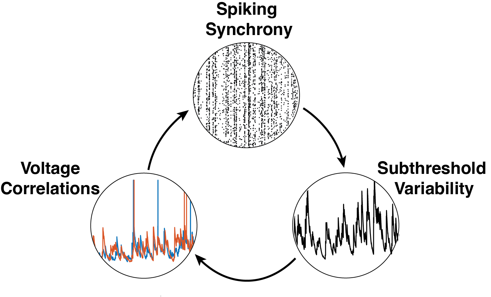

About Me
I am a neuroscientist with a strong foundation in physics and a passion for
understanding the brain through computational and mathematical modeling. I earned my BS in Physics and
Astronomy in 2017 and an MS in Neurobiology in 2019 from Stony Brook University, where I developed a
biophysically inspired neuronal model to predict spike timing patterns with large inter-spike intervals.
From 2019-2020 I worked as a Technical Associate at MIT, where I investigated the pharmacological effects
of non-benzodiazepine compounds on brain rhythms in rodent models. Currently, I am pursuing a PhD in
Neuroscience at UT Austin, where I use advanced computational tools to study how input synchrony shapes
neural variability.
Beyond research, I am deeply committed to science outreach. I served as the Science Outreach Coordinator
for the UT Austin Neuroscience Graduate Program for two years, organizing events to make neuroscience
accessible and engaging to the broader community..
Research Interest
